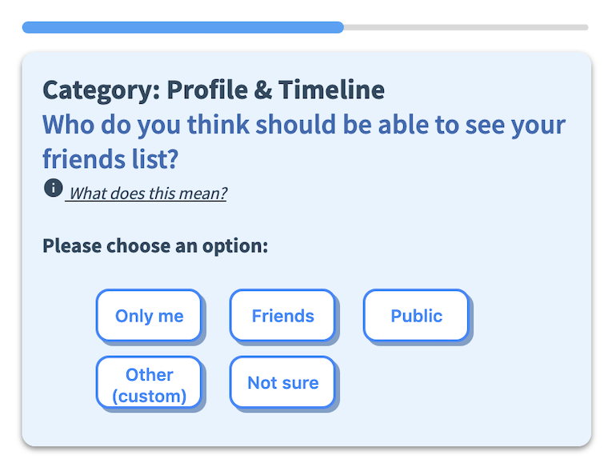
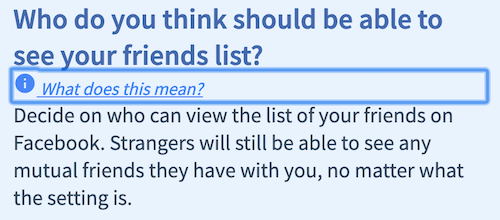
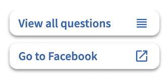

SafeSea is a crowdsourcing plugin developed by researchers at Carnegie Mellon that helps you manage your privacy and safety online. This plugin overrides your Chrome tab page and gives you access to an application that can help you manage your privacy and security settings on social media.
Facebook Setting Checkup
Facebook Setting Checkup is an application currently running on SafeSea. In this application you will answer questions regarding your privacy settings on Facebook. You can answer as many questions as you want, and the bar on top of the question will keep track of your progression.

Facebook Privacy Question with Progress Bar
Once you answer a question about which setting you think would be best, you will then be shown your current setting on Facebook. You can then choose to navigate to Facebook to change that setting directly by pressing Change this setting on Facebook, or you can just go to the next question.
Next Question and Change Settings buttons
If you are confused, you can click the information icon which will give more context to the question you are answering.

Show Description
Your response will only be recorded after you press the 'Next Question' button.
You can use the side menu to view all questions or go to your Facebook account.

Side Menu
Please Note: We will collect your cookies from facebook.com to display your current privacy settings. All information is collected anonymously so you don't need to worry about the safety of your data.
By clicking 'Accept and continue', you agree to have your Facebook cookies collected, stored, and used for the duration of this experiment.
When you click the button, an alert from Chrome will pop up requesting permission to collect your cookies. Please accept this request so that we can conduct the study.